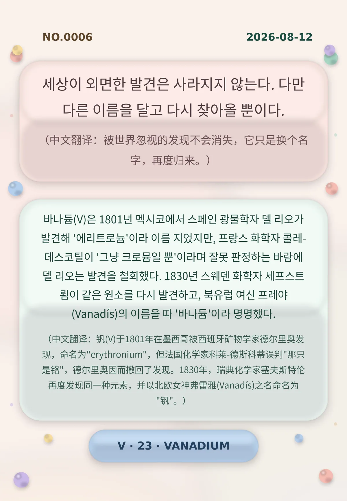

세상이 외면한 발견은 사라지지 않는다. 다만 다른 이름을 달고 다시 찾아올 뿐이다. （中文翻译：被世界忽视的发现不会消失，它只是换个名字，再度归来。）
바나듐(V)은 1801년 멕시코에서 스페인 광물학자 델 리오가 발견해 '에리트로늄'이라 이름 지었지만, 프랑스 화학자 콜레-데스코틸이 '그냥 크로뮴일 뿐'이라며 잘못 판정하는 바람에 델 리오는 발견을 철회했다. 1830년 스웨덴 화학자 세프스트룀이 같은 원소를 다시 발견하고, 북유럽 여신 프레야(Vanadís)의 이름을 따 '바나듐'이라 명명했다. （中文翻译：钒(V)于1801年在墨西哥被西班牙矿物学家德尔里奥发现，命名为"erythronium"，但法国化学家科莱-德斯科蒂误判"那只是铬"，德尔里奥因而撤回了发现。1830年，瑞典化学家塞夫斯特伦再度发现同一种元素，并以北欧女神弗雷雅(Vanadís)之名命名为"钒"。）
冷知识由执笔的模型自行查证。逐条断言、来源与所引原句存档在纯文字副本里，未经程序逐字校验，留作事后核实。